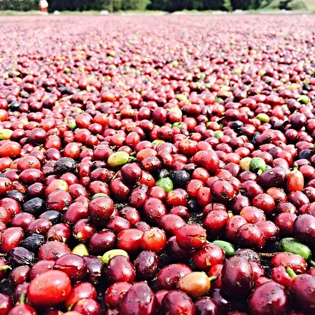

Do Japão aoCerrado Mineiro
A cafeicultura faz parte da família Miaki há gerações. Uma história de recomeços, trabalho e paixão pelo café que atravessa quase um século.
Três gerações · desde os anos 30
- Anos 30Paraná
Do Japão para os cafezais
Os avós paternos de Marcos Cézar Miaki chegam do Japão para trabalhar como colonos em fazendas de café no Paraná.
- 1935Paraná
A primeira terra
Fruto de muito trabalho e dedicação, a família adquire a primeira propriedade de café. Vêm depois os cafezais de Santa Mariana e Formosa do Oeste. Desde então, a paixão pelo café só aumentou.

- 1978Patrocínio, MG
A Geada Negra e o recomeço
Depois da forte geada que arrasou os cafezais do Paraná, conhecida como Geada Negra, a família vende as fazendas e muda para Patrocínio, no Cerrado Mineiro. Começa um novo capítulo de amor pela cafeicultura.

- Anos 90Vocação
A jornada solo de Marcos
Ao lado do pai, José Miaki, Marcos Cézar descobre a vocação e inicia a própria jornada na produção de café.
- 2000Fundação
Nasce a MC Miaki Coffee
Marcos Cézar e a esposa, Brasemir, estruturam a MC Miaki Coffee, empresa que se expandiria nos anos seguintes até reunir seis núcleos produtores.

- 2013Prêmio
Campeão Ernesto Illy
O café da MC Miaki vence o Prêmio Ernesto Illy de Qualidade do Café, um dos concursos mais respeitados do país.
- 2015Família
A segunda geração
Os filhos Matheus e Amanda Ribeiro Miaki passam a participar ativamente do dia a dia rural e empresarial.

- 2018Gestão
Miaki Agronegócios
Criação da Miaki Agronegócios Ltda., que organiza a operação do grupo para a fase seguinte.
- 2020Prêmio
Fornecedor Sustentável do Ano
A illy reconhece Marcos Cezar Miaki como Fornecedor Sustentável do Ano.

- 2025Prêmio
Qualidade e quantidade
3º lugar em duas categorias do Prêmio Produtividade do 33º Seminário do Café da ACARPA: 116 sacas por hectare em sequeiro e 104 em área irrigada. “Isso traduz que estamos no caminho certo”, resumiu Amanda Miaki.

- HojeFuturo
Olhando para a frente
Agricultura regenerativa, irrigação, equipe treinada e novas variedades no campo. A mesma paixão, com os olhos no futuro.
A família conta a própria história.
Fruto e reconhecimento de um trabalho constante.
Entre os muitos concursos de qualidade, premiações e reconhecimentos recebidos pelos cafés do grupo, estes são os destaques.
- 20252× 3º
33º Seminário do Café · ACARPA
3º lugar no Prêmio Produtividade em duas categorias: sequeiro (116 sc/ha) e irrigado (104 sc/ha).
- 2020Destaque
illy · Fornecedor Sustentável do Ano
Reconhecimento à cafeicultura sustentável praticada em todos os núcleos.
- 2012 a 20208×
Prêmio Ernesto Illy de Qualidade
Finalista em 8 edições: 2012, 2013, 2014, 2015, 2016, 2018, 2019 e 2020.
- 20131º
Prêmio Ernesto Illy de Qualidade
Campeão nacional.
- Safra 2017/18Finalista
V Prêmio Região do Cerrado Mineiro
Núcleo Recanto finalista na categoria Cereja Descascado.
- Safra 2015/16Finalista
III Prêmio Região do Cerrado Mineiro
Núcleo Shalom finalista na categoria Natural.